A century of football (1930 - 2030)
The players
across the eras.
Explore each tournament's standout players, winning captains and coaches, all-time records, and profiles from across the eras.
Top scorersKylian Mbappé 23 editions
23 editions
- 2026Kylian Mbappé10goals
- 2022Kylian Mbappé8goals
- 2018Harry Kane
 6goals
6goals - 2014James Rodríguez
 6goals
6goals - 2010Thomas Müller
 Wesley Sneijder
Wesley Sneijder David Villa
David Villa Diego Forlán
Diego Forlán 5goals
5goals - 2006Miroslav Klose5goals
- 2002Ronaldo
 8goals
8goals - 1998Davor Šuker
 6goals
6goals - 1994Oleg Salenko
 Hristo Stoichkov
Hristo Stoichkov 6goals
6goals - 1990Salvatore Schillaci
 6goals
6goals - 1986Gary Lineker6goals
- 1982Paolo Rossi6goals
- 1978Mario Kempes
 6goals
6goals - 1974Grzegorz Lato
 7goals
7goals - 1970Gerd Müller10goals
- 1966Eusébio
 9goals
9goals - 1962Flórián Albert
 GarrinchaValentin Ivanov
GarrinchaValentin Ivanov Dražan Jerković
Dražan Jerković Leonel Sánchez
Leonel Sánchez Vavá4goals
Vavá4goals - 1958Just Fontaine13goals
- 1954Sándor Kocsis11goals
- 1950Ademir de Menezes9goals
- 1938Leônidas7goals
- 1934Oldřich Nejedlý
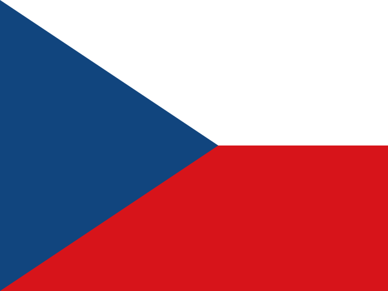
5goals - 1930Guillermo Stábile8goals
Best playersRodri23 editions
- 2026RodriGolden Ball
- 2022Lionel MessiGolden Ball
- 2018Luka ModrićGolden Ball
- 2014Lionel MessiGolden Ball
- 2010Diego ForlánGolden Ball
- 2006Zinédine ZidaneGolden Ball
- 2002Oliver KahnGolden Ball
- 1998RonaldoGolden Ball
- 1994RomárioGolden Ball
- 1990Salvatore SchillaciGolden Ball
- 1986Diego MaradonaGolden Ball
- 1982Paolo RossiGolden Ball
- 1978Mario KempesGolden Ball
- 1974Johan CruyffRetrospective
- 1970PeléRetrospective
- 1966Bobby CharltonRetrospective
- 1962GarrinchaRetrospective
- 1958DidiRetrospective
- 1954Ferenc PuskásRetrospective
- 1950ZizinhoRetrospective
- 1938LeônidasRetrospective
- 1934Giuseppe MeazzaRetrospective
- 1930José NasazziRetrospective
Best young playersPau Cubarsí23 editions
- 2026Pau CubarsíOfficial award
- 2022Enzo FernándezOfficial award
- 2018Kylian MbappéOfficial award
- 2014Paul PogbaOfficial award
- 2010Thomas MüllerOfficial award
- 2006Lukas PodolskiOfficial award
- 2002Landon Donovan
 Retrospective
Retrospective - 1998Michael OwenRetrospective
- 1994Marc OvermarsRetrospective
- 1990Robert ProsinečkiRetrospective
- 1986Enzo Scifo
 Retrospective
Retrospective - 1982Manuel AmorósRetrospective
- 1978Antonio CabriniRetrospective
- 1974Władysław ŻmudaRetrospective
- 1970Teófilo Cubillas
 Retrospective
Retrospective - 1966Franz BeckenbauerRetrospective
- 1962Flórián AlbertRetrospective
- 1958PeléRetrospective
- 1954Not awarded
- 1950Not awarded
- 1938Not awarded
- 1934Not awarded
- 1930Not awarded
Best goalkeepersUnai Simón23 editions
- 2026Unai SimónGolden Glove
- 2022Emiliano MartínezGolden Glove
- 2018Thibaut CourtoisGolden Glove
- 2014Manuel NeuerGolden Glove
- 2010Iker CasillasGolden Glove
- 2006Gianluigi BuffonYashin Award
- 2002Oliver KahnYashin Award
- 1998Fabien BarthezYashin Award
- 1994Michel Preud'hommeYashin Award
- 1990Not awarded
- 1986Not awarded
- 1982Not awarded
- 1978Not awarded
- 1974Not awarded
- 1970Not awarded
- 1966Not awarded
- 1962Not awarded
- 1958Not awarded
- 1954Not awarded
- 1950Not awarded
- 1938Not awarded
- 1934Not awarded
- 1930Not awarded
Winning captainsRodri23 editions
- 2026Rodri
- 2022Lionel Messi
- 2018Hugo Lloris
- 2014Philipp Lahm
- 2010Iker Casillas
- 2006Fabio Cannavaro
- 2002Cafu
- 1998Didier Deschamps
- 1994Dunga
- 1990Lothar Matthäus
- 1986Diego Maradona
- 1982Dino Zoff
- 1978Daniel Passarella
- 1974Franz Beckenbauer
- 1970Carlos Alberto Torres
- 1966Bobby Moore
- 1962Mauro Ramos
- 1958Bellini
- 1954Fritz Walter
- 1950Obdulio Varela
- 1938Giuseppe Meazza
- 1934Gianpiero Combi
- 1930José Nasazzi
Winning coachesLuis de la Fuente23 editions
- 2026Luis de la Fuente
- 2022Lionel Scaloni
- 2018Didier Deschamps
- 2014Joachim Löw
- 2010Vicente del Bosque
- 2006Marcello Lippi
- 2002Luiz Felipe Scolari
- 1998Aimé Jacquet
- 1994Carlos Alberto Parreira
- 1990Franz Beckenbauer
- 1986Carlos Bilardo
- 1982Enzo Bearzot
- 1978César Luis Menotti
- 1974Helmut Schön
- 1970Mário Zagallo
- 1966Alf Ramsey
- 1962Aymoré Moreira
- 1958Vicente Feola
- 1954Sepp Herberger
- 1950Juan López Fontana
- 1938Vittorio Pozzo
- 1934Vittorio Pozzo
- 1930Alberto Suppici
Top goalscorers (All time)Kylian Mbappé· 22 goals11 players
- 01Kylian Mbappé22goals
- 02Lionel Messi21goals
- 03Miroslav Klose16goals
- 04Ronaldo15goals
- 05Harry Kane14goals
- 05Gerd Müller14goals
- 07Just Fontaine13goals
- 08Pelé12goals
- 09Cristiano Ronaldo11goals
- 09Jürgen Klinsmann11goals
- 09Sándor Kocsis11goals
Most appearancesLionel Messi· 34 matches14 players
- 01Lionel Messi34matches
- 02Cristiano Ronaldo27matches
- 03Lothar Matthäus25matches
- 04Miroslav Klose24matches
- 05Paolo Maldini23matches
- 05Luka Modrić23matches
- 05Manuel Neuer23matches
- 08Kylian Mbappé22matches
- 09Thibaut Courtois21matches
- 09Diego Maradona21matches
- 09Nicolás Otamendi21matches
- 09Ivan Perišić21matches
- 09Uwe Seeler21matches
- 09Władysław Żmuda21matches
Prominent playersFrom Kylian Mbappéto José Nasazzi64 players
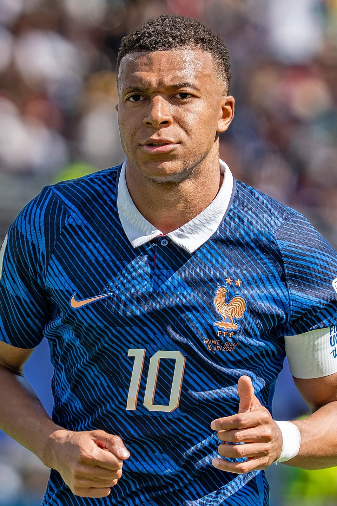
Image source ↗Kylian Mbappé
Born in Paris, Kylian Mbappé grew up in Bondy, a suburb where his family was closely involved in sport. He entered the French youth football system before making his senior breakthrough as a teenager.
Read full profileShow less
He emerged at Monaco, became a prolific forward for Paris Saint-Germain and then joined Real Madrid. He can start wide or through the middle, using sudden acceleration to attack space behind a defence. He is equally dangerous when driving at a full-back and when finishing a move with one touch.
Mbappé gave France a direct threat as it won the 2018 World Cup, scoring in the final against Croatia and receiving the best young player award. In 2022 he carried that scoring role further, finishing with eight goals and a hat-trick in the final against Argentina, although France lost the shootout. His ten goals in 2026 powered another run to the semi-finals and made him the tournament's top scorer again.
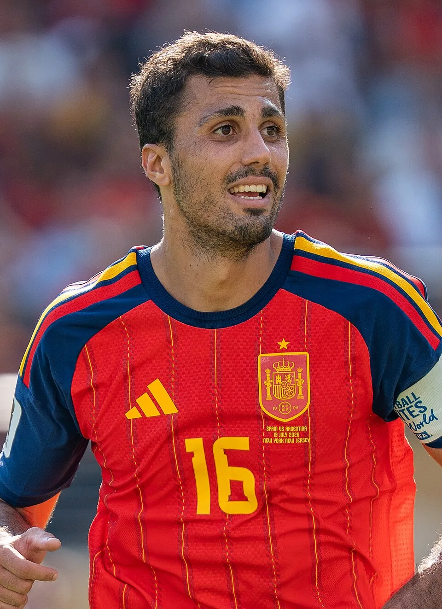
Image source ↗Rodri
Rodri was born in Madrid and developed his game in the youth ranks of Atlético Madrid and Villarreal. His early training shaped a midfielder who values positioning and control as much as physical strength.
Read full profileShow less
He developed at Villarreal and Atlético Madrid before becoming the central midfielder around whom Manchester City built its possession game. He reads passing lanes early, protects defenders and moves the ball with little fuss. His calm positioning lets teammates attack while he controls the space they leave behind.
Spain's 2026 title run depended on the control Rodri supplied in midfield. He kept the team connected as it moved the ball patiently and limited opponents' chances to break forward. Named the tournament's best player, he gave Spain a steady platform through the knockout rounds and into its extra-time final victory over Argentina.
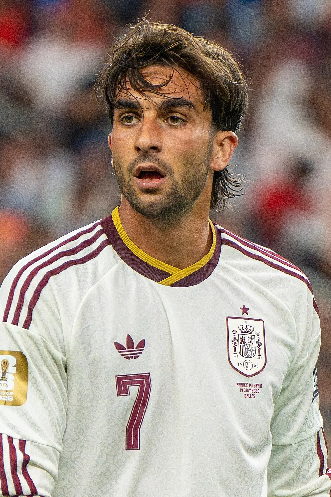
Image source ↗Ferran Torres
Ferran Torres was born in Foios, near Valencia, and joined Valencia’s academy as a child. He came through its youth teams as a quick, adaptable attacking player.
Read full profileShow less
He came through Valencia, played for Manchester City and Barcelona, and joined Paris Saint-Germain in 2026. A versatile forward, he can hold a wide position or run into the space usually occupied by a striker. His sharp movement without the ball is as important to his game as his finishing.
Torres supplied the decisive moment of Spain's 2026 World Cup campaign. With the final against Argentina still scoreless in extra time, he scored in the 106th minute to give Spain a 1–0 win. The goal rewarded a team that had relied on patient possession, while his run and finish showed how Spain could turn control of the ball into a winning chance.
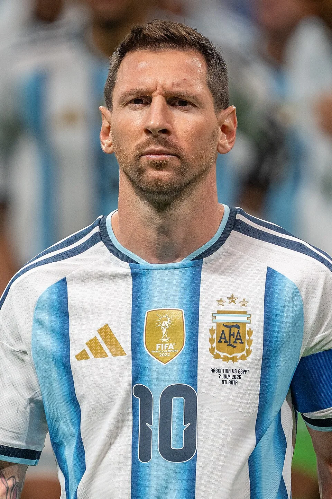
Image source ↗Lionel Messi
Lionel Messi was born in Rosario, Argentina, and moved to Spain while still a boy to join Barcelona’s academy. That move placed him in the club system where he would spend most of his life in football.
Read full profileShow less
He became Barcelona's record scorer and creative leader before spells with Paris Saint-Germain and Inter Miami. Usually starting from the right or between the lines, he combines close control with passes that open crowded defences. His left foot can shape a move, deliver its final ball or finish it himself.
Messi had already led Argentina to the 2014 final, but the 2022 tournament completed his country's long pursuit of another title. After an opening defeat, his goals and chance creation helped Argentina recover and progress through the knockout rounds. He scored twice in the final against France, then converted in the shootout as Argentina won its third World Cup; he was named the tournament's best player.
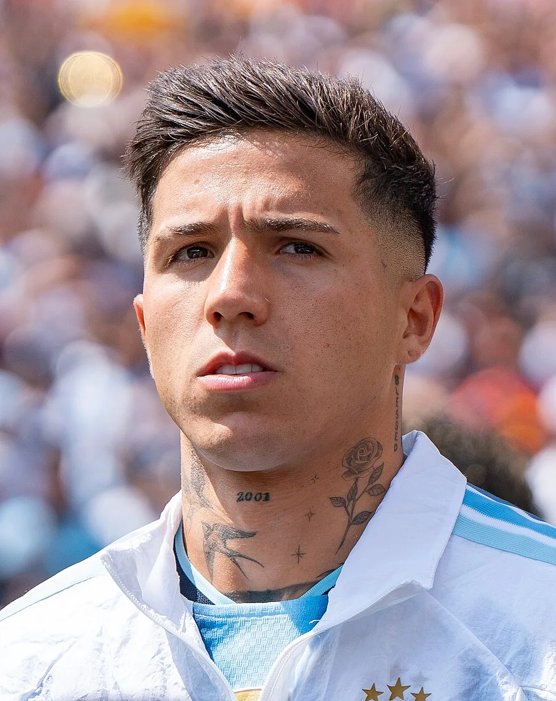
Image source ↗Enzo Fernández
Enzo Fernández was born in the Buenos Aires area and grew up in River Plate’s youth system. His route from academy football to the senior game began in Argentina before taking him to Europe.
Read full profileShow less
He came through River Plate, impressed at Benfica and moved to Chelsea. A midfielder with the range to pass through pressure or cover ground without the ball, he connects defence and attack. His energy lets him contribute to a press while still offering a secure passing option in possession.
Fernández grew into Argentina's midfield during its 2022 World Cup triumph. His goal against Mexico helped the team recover from its shock opening loss, and his passing and work rate supported the more experienced players around him. He received the best young player award as Argentina completed its run with victory over France in the final.
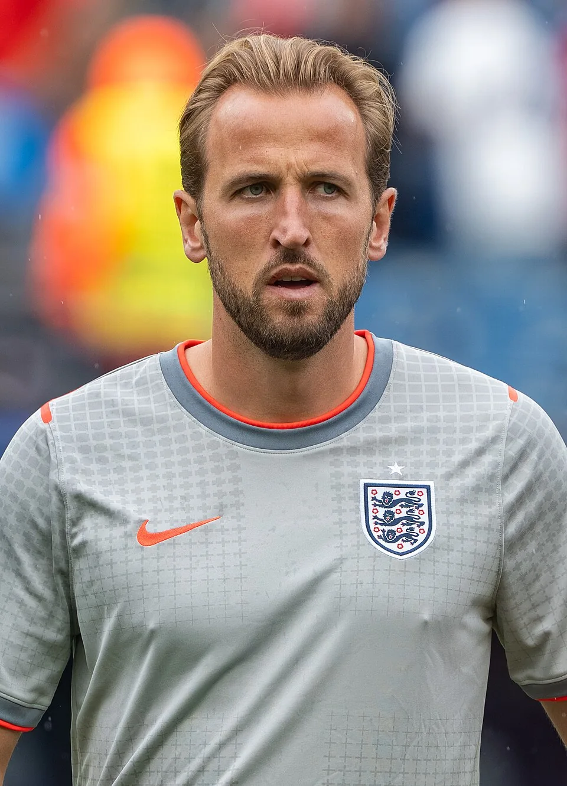
Image source ↗Harry Kane
Harry Kane was born in London and grew up in the capital. He developed in Tottenham Hotspur’s academy and gained senior experience through loan spells before securing a place in its first team.
Read full profileShow less
He developed into Tottenham Hotspur's record scorer before joining Bayern Munich. He is a centre-forward who can finish from close range, strike from distance and drop into midfield to release runners. That combination of scoring and passing has made him the focal point of England's attack.
Kane captained England during its run to the 2018 World Cup semi-finals. His six goals made him the tournament's leading scorer and gave the side a reliable source of goals as it advanced through the group stage and knockouts. England eventually finished fourth, but his finishing was central to its deepest World Cup run in decades.
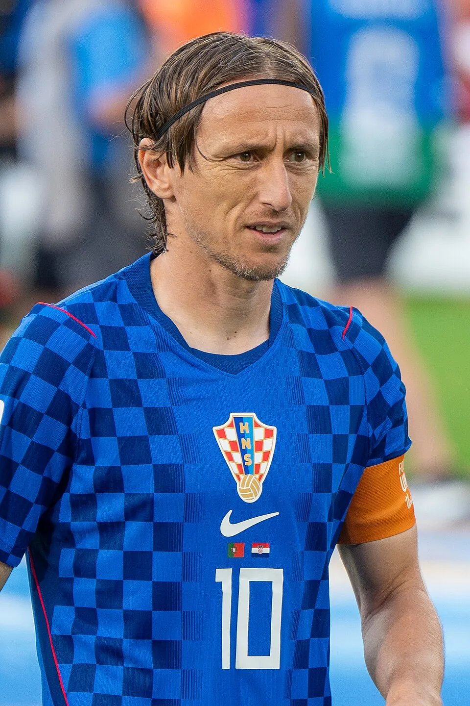
Image source ↗Luka Modrić
Luka Modrić was born in Zadar, in what was then Yugoslavia, and spent part of his childhood amid the Croatian War of Independence. Football became the path that took him from his hometown to Dinamo Zagreb’s youth setup.
Read full profileShow less
He moved from Dinamo Zagreb to Tottenham Hotspur and Real Madrid, where his passing helped sustain years of success, before joining AC Milan in 2025. He receives the ball under pressure, turns away from opponents and changes the pace of a match with either a short exchange or a long pass. Croatia has often relied on him to set its rhythm.
Modrić led Croatia's midfield during its unexpected trip to the 2018 World Cup final. Through three demanding knockout ties that went beyond normal time, he kept the team organised and gave it a way to play forward under pressure. Croatia lost to France in the final, but his influence across the run earned him the tournament's best player award.
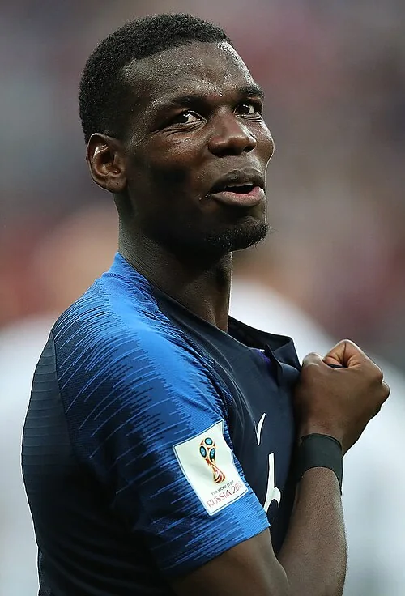
Image source ↗Paul Pogba
Paul Pogba was born near Paris to a family with Guinean roots. He spent his youth in French football before moving to Manchester United’s academy as a teenager.
Read full profileShow less
He developed at Manchester United, became a star at Juventus and returned to United, before later spells at Juventus and Monaco. A powerful midfielder, he can carry the ball through the centre or switch play with long passes. His physical reach and technical range allow him to change the tempo of a game quickly.
Pogba was named the best young player at the 2014 World Cup as France reached the quarter-finals. Four years later he brought greater experience to the midfield of its title-winning team, helping protect the defence while advancing the ball toward its fast forwards. His goal in the 2018 final against Croatia helped France turn a tight contest into a 4–2 victory.
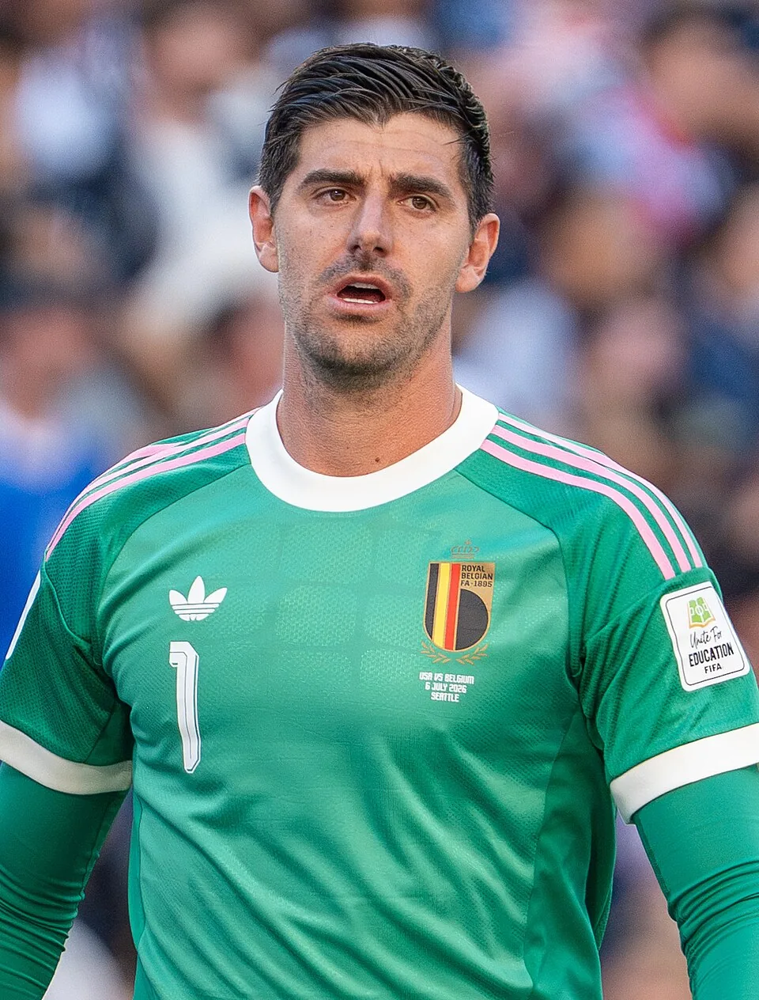
Image source ↗Thibaut Courtois
Thibaut Courtois was born in Bree, Belgium, and developed at Genk. He began as an outfield player in youth football before settling into goalkeeping.
Read full profileShow less
He emerged at Genk and developed at Atlético Madrid and Chelsea before becoming Real Madrid's goalkeeper. His height gives him reach across the goal, but his timing and reactions also stand out in close-range situations. He is comfortable waiting for the right moment to leave his line.
Courtois anchored the Belgium side that reached third place at the 2018 World Cup, its best finish in the competition. His saves gave the team's attack room to take risks, especially during a difficult knockout path. Belgium fell to France in the semi-final but won the third-place match, and Courtois was named the tournament's best goalkeeper.
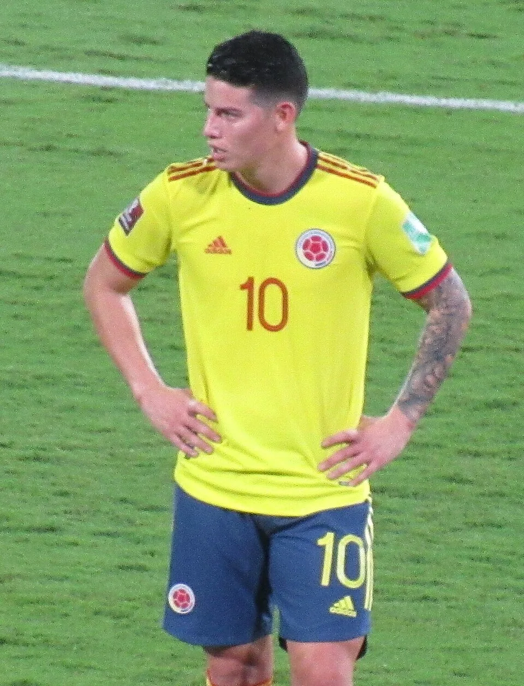
Image source ↗James Rodríguez
James Rodríguez was born in Cúcuta, Colombia, and began his professional career while still a teenager. His early progress at Envigado opened the way to a move abroad.
Read full profileShow less
He made his name at Porto and Monaco before moving to Real Madrid, with later spells including Bayern Munich. A left-footed attacking midfielder, he looks for pockets of space from which to shoot or play a final pass. His first touch and vision allow him to turn quickly toward goal.
James became the centre of Colombia's 2014 World Cup attack. He scored in every match the team played, including twice against Uruguay in the round of 16, and finished as the tournament's leading scorer with six goals. Colombia reached the quarter-finals for the first time before losing to Brazil; his goals and creativity made that run possible.
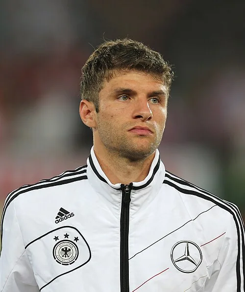
Image source ↗Thomas Müller
Thomas Müller was born in Bavaria and joined Bayern Munich’s youth system as a boy. He rose through the club’s ranks rather than arriving as an established senior player.
Read full profileShow less
He spent the defining years of his club career at Bayern Munich, contributing goals and assists without relying on flashy dribbling. He reads defenders' movements and arrives in the space they have just left, a role often described as finding room between positions. His work rate also helps his team press high upfield.
Müller broke through for Germany at the 2010 World Cup, scoring five times as the team finished third and receiving the best young player award. His movement made Germany's counterattacks difficult to track, and he continued to play an important attacking role when the side won the 2014 title. Across both campaigns, his ability to appear in decisive areas gave Germany goals from unexpected positions.
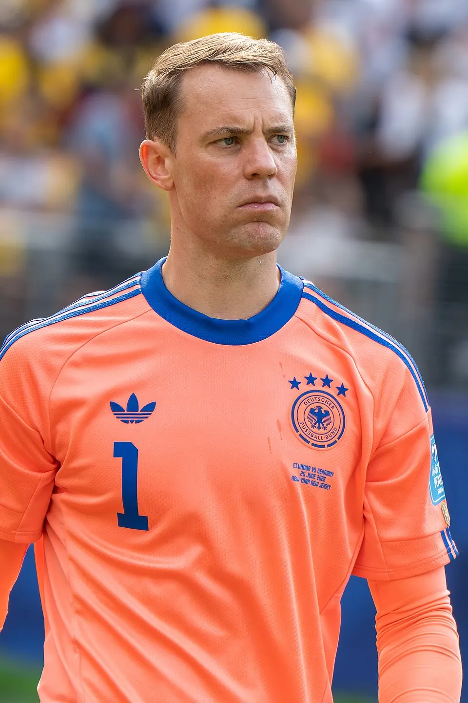
Image source ↗Manuel Neuer
Manuel Neuer was born in Gelsenkirchen and grew up in Schalke’s youth system. He advanced from local academy football to become the club’s first-choice goalkeeper.
Read full profileShow less
He came through Schalke before becoming a long-serving leader at Bayern Munich. He pairs reflex saves with accurate passing and the confidence to move well beyond his penalty area. By sweeping up through balls, he allows his defenders to hold a high line.
Neuer's approach was central to Germany's 2014 World Cup triumph. He protected the space behind an attacking team, dealt with danger before it became a shot and remained composed when opponents did reach his goal. Germany beat Argentina 1–0 in the final, and Neuer received the tournament's best goalkeeper award for his work throughout the campaign.
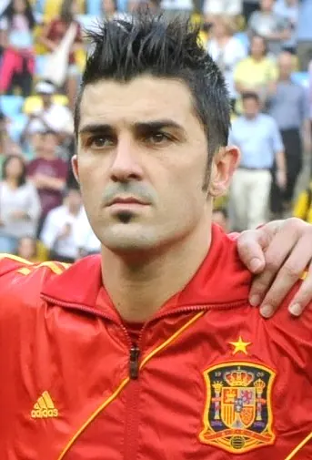
Image source ↗David Villa
David Villa was born in Tuilla, a village in Asturias, Spain. He developed in the region’s football system before establishing himself as a senior striker.
Read full profileShow less
He scored regularly for Zaragoza, Valencia and Barcelona before later spells with Atlético Madrid and clubs abroad. He strikes early with either foot and finds shooting positions even when defenders crowd the box. His movement across the front line made him an effective partner for Spain's possession-heavy midfield.
Spain's 2010 World Cup side often won by narrow margins, making Villa's goals especially valuable. He scored five times, including decisive knockout goals against Portugal and Paraguay, and shared the tournament scoring lead. His finishing carried Spain through matches in which chances were scarce, setting up the team's first World Cup title even though Andrés Iniesta scored the final winner.
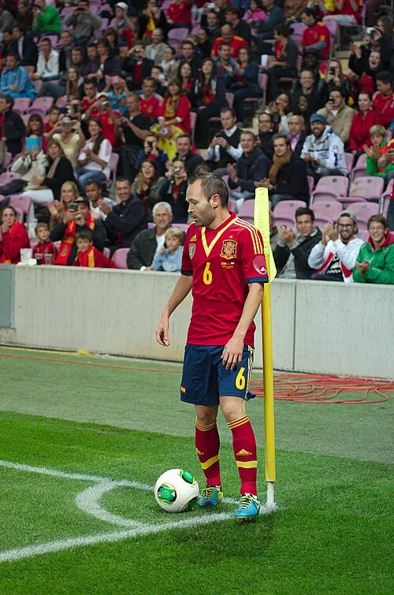
Image source ↗Andrés Iniesta
Andrés Iniesta was born in Fuentealbilla, Spain, and left home as a child to join Barcelona’s La Masia academy. The move placed him at the centre of a generation shaped by the club’s passing game.
Read full profileShow less
He grew through Barcelona's academy into one of its most influential midfielders, later playing in Japan and the United Arab Emirates. His close control lets him escape pressure in small spaces, while his passing moves a team forward without losing its balance. He brought the same calm to Spain's midfield.
Iniesta helped Spain control matches during its 2010 World Cup victory, working with Xavi and Sergio Busquets to keep possession and draw opponents out of shape. The final against the Netherlands stayed scoreless deep into extra time before he found space to score the only goal. That finish crowned a collective style in which his touch and decision-making had been essential.
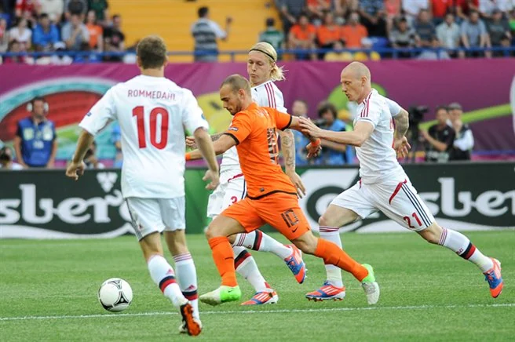
Image source ↗Wesley Sneijder
Wesley Sneijder was born in Utrecht and entered Ajax’s youth academy at a young age. His development in Amsterdam gave him the technical base for a career as an attacking midfielder.
Read full profileShow less
He developed at Ajax before playing for Real Madrid, Inter Milan and Galatasaray. An attacking midfielder with a wide range of passes, he can switch play quickly or deliver a precise set piece. His timing around the penalty area also turned him into a scorer when the Netherlands needed one.
Sneijder drove the Netherlands toward the 2010 World Cup final with five goals, sharing the tournament scoring lead. He scored in the quarter-final win over Brazil and again in the semi-final against Uruguay, giving a disciplined side a decisive attacking edge. The Netherlands lost 1–0 to Spain in extra time, but his goals and distribution were central to its run.
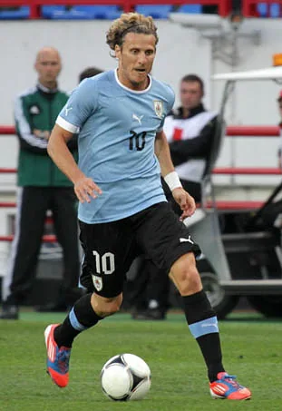
Image source ↗Diego Forlán
Diego Forlán was born in Montevideo into a football family; his father, Pablo, also represented Uruguay. He began his senior career in South America before moving to England.
Read full profileShow less
He rebuilt his reputation at Villarreal and Atlético Madrid after an early spell at Manchester United. He can strike powerfully with either foot and is willing to shoot from distance, making him dangerous when a defence gives him little space. He also drops deeper to link Uruguay's attacks.
Forlán was the attacking leader of Uruguay's run to fourth place at the 2010 World Cup. His five goals included strikes in the knockout rounds, while his passing and set pieces helped a compact team threaten stronger opponents. Uruguay lost a close semi-final to the Netherlands and the third-place match to Germany, but his overall play earned the tournament's best player award.
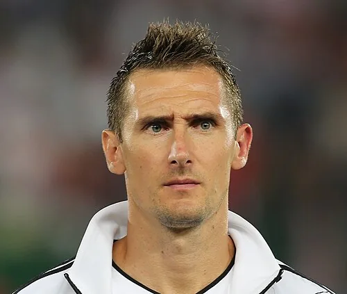
Image source ↗Miroslav Klose
Miroslav Klose was born in Poland and moved to Germany with his family as a child. His route to top-flight football was gradual, beginning outside the major academy system.
Read full profileShow less
He scored for Kaiserslautern, Werder Bremen, Bayern Munich and Lazio across a long club career. He relies on clever movement, sharp timing and strong heading rather than elaborate touches. Those qualities made him a dependable finisher in very different German teams.
Klose led the scoring at the 2006 World Cup with five goals as host Germany reached third place. He remained part of the national side through the next two tournaments and helped it win in 2014, when he became the World Cup's all-time leading scorer. His consistency gave Germany a proven penalty-area option across more than a decade of deep tournament runs.
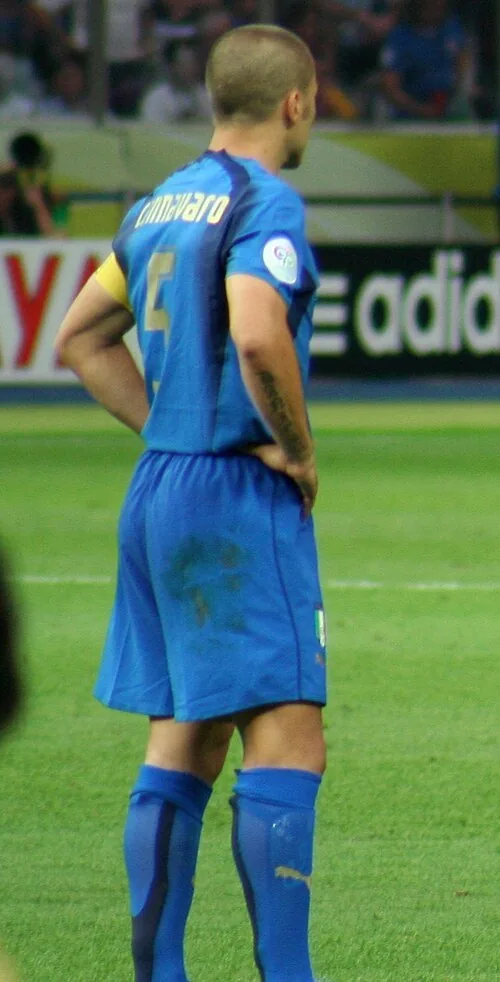
Image source ↗Fabio Cannavaro
Fabio Cannavaro was born in Naples and grew up following his hometown club. He entered Napoli’s youth system and progressed into professional football as a defender.
Read full profileShow less
He grew from a young defender at Napoli into a leader at Parma, Inter Milan, Juventus and Real Madrid. He relied on anticipation and precise timing rather than size, meeting attackers early and competing strongly in the air. His ability to read play made him one of Italy's most trusted centre-backs.
Cannavaro captained Italy to the 2006 World Cup title and organised a defence that conceded only two goals in seven matches. He kept the back line compact through a demanding knockout run and remained composed in the final against France. Italy won the shootout after a 1–1 draw, completing a campaign built on the security he helped provide.
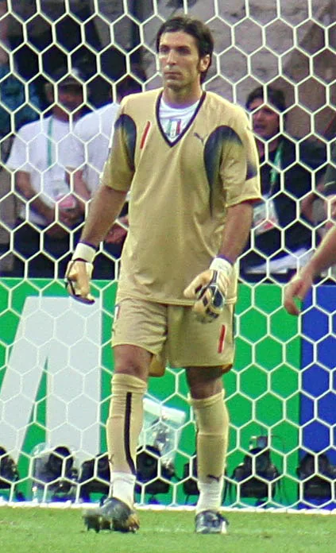
Image source ↗Gianluigi Buffon
Gianluigi Buffon was born in Carrara, Italy, into a family of athletes. He joined Parma’s youth setup and chose goalkeeping after initially playing in midfield.
Read full profileShow less
He began at Parma and spent the core of his career with Juventus, later returning to Parma after a spell at Paris Saint-Germain. He commanded his area with authority, made difficult saves look controlled and set standards for the defenders in front of him. His longevity made him a reference point for Italian goalkeeping.
Buffon provided the last line of a disciplined Italy side at the 2006 World Cup. The team conceded only twice across the tournament, and his handling and organisation helped it survive tight knockout matches. Italy defeated France in a penalty shootout after a 1–1 final, while Buffon's displays earned him the tournament's best goalkeeper award.
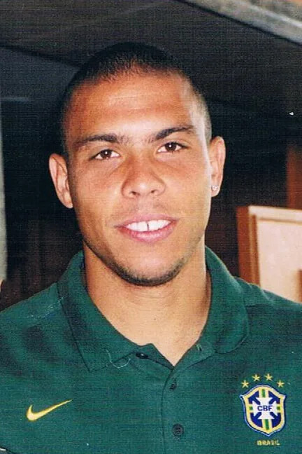
Image source ↗Ronaldo
Ronaldo was born in Rio de Janeiro and drew attention for his scoring while still a teenager. His first senior steps in Brazil quickly led to a move to European football.
Read full profileShow less
He emerged at Cruzeiro and PSV before becoming a global star with Barcelona, Inter Milan and Real Madrid. At his best, he combined explosive acceleration with close control and an ability to finish while running at full speed. Defenders could rarely tell whether he would take another touch or shoot immediately.
Ronaldo was named the best player at the 1998 World Cup as Brazil reached the final, but his defining team success came four years later. Returning from serious injuries, he scored eight goals in 2002 and led Brazil's attack through an unbeaten title run. His two goals against Germany in the final turned a tense match into a 2–0 victory and secured Brazil's fifth World Cup.
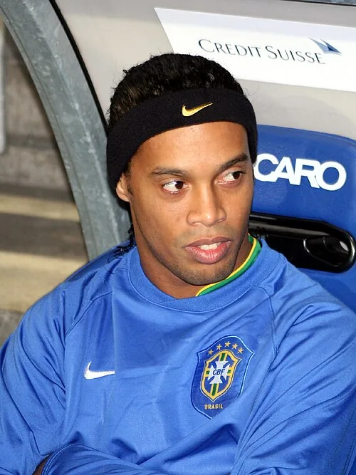
Image source ↗Ronaldinho
Ronaldinho was born in Porto Alegre into a family deeply connected to football. He grew up playing the game with his brother Roberto, who also became a professional, before entering Grêmio’s setup.
Read full profileShow less
He rose through Grêmio and Paris Saint-Germain before becoming the creative heart of Barcelona's revival. His loose-hipped dribbling, disguised passes and improvisation made difficult moves appear effortless. He later played for AC Milan and Brazilian clubs, but his Barcelona years established his reputation as one of the game's great entertainers.
Ronaldinho added invention to Brazil's 2002 World Cup attack alongside Ronaldo and Rivaldo. In the quarter-final against England, his long-range free kick put Brazil ahead 2–1 and helped send the team into the semi-finals. Brazil went on to win the title; although he did not score in the final, his ability to unsettle defenders was an important part of the campaign.

Oliver Kahn
Oliver Kahn was born in Karlsruhe and joined his hometown club’s youth ranks. He worked his way from local academy football to the senior goalkeeper’s position.
Read full profileShow less
He moved from Karlsruhe to Bayern Munich and became a commanding figure for club and country. He played with fierce concentration, strong reactions and a willingness to confront attackers in one-on-one situations. His vocal leadership often set the emotional tone of the team around him.
Kahn's saves carried Germany through a series of narrow victories at the 2002 World Cup. He was named both the tournament's best goalkeeper and its best player as Germany reached the final. Brazil eventually beat Germany 2–0, but Kahn's performances had been essential to a side that depended heavily on defensive discipline.
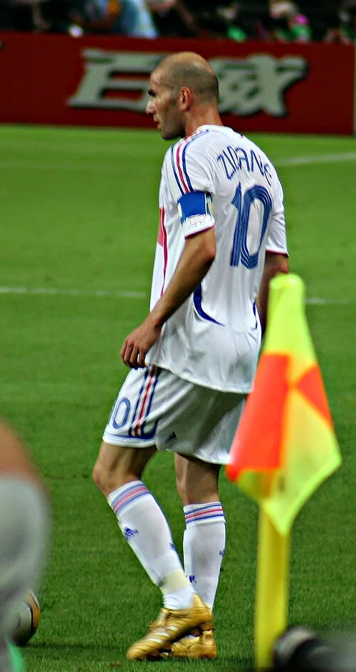
Image source ↗Zinédine Zidane
Zinédine Zidane was born in Marseille to parents from Algeria. He learned the game in southern France and entered Cannes’s youth system before becoming a professional.
Read full profileShow less
He developed at Cannes and Bordeaux before starring for Juventus and Real Madrid. He controlled matches through his first touch, body feints and ability to find a pass while surrounded by opponents. After retiring, he returned to Real Madrid as a coach and won further major trophies.
Zidane gave France its decisive attacking moments in two World Cup finals. His two headers against Brazil in 1998 helped deliver the country's first title, while his playmaking carried France back to the final in 2006 and earned him the best player award. He scored a penalty against Italy in that final, but France lost the shootout after he was sent off in extra time.

Davor Šuker
Davor Šuker was born in Osijek, then part of Yugoslavia, and began his football development in his hometown. His early career preceded Croatia’s emergence as an independent national team.
Read full profileShow less
He moved from Dinamo Zagreb to Sevilla and then Real Madrid, where he won major club honours. The left-footed striker made subtle runs across defenders and could finish quickly from a narrow angle. His composure gave Croatia an outlet even when it created only a few chances.
Šuker made Croatia's first World Cup appearance in 1998 a remarkable one. He scored six goals, including in the semi-final against France, and finished as the tournament's leading scorer. Croatia lost that semi-final but beat the Netherlands for third place; his finishing was the clearest reason the new national team went so far.

Fabien Barthez
Fabien Barthez was born in southern France and began his professional career at Toulouse. He established himself as a goalkeeper before moving to clubs competing for major honours.
Read full profileShow less
He won major honours with Marseille and Monaco before joining Manchester United, and he later played for Nantes. An agile goalkeeper with quick reactions, he was also willing to use his feet and leave his line to stop danger early. That adventurous style gave defenders an extra passing option.
Barthez was the last line of France's defence during its 1998 World Cup triumph. He kept five clean sheets, conceded only twice and shut out Brazil in the 3–0 final. His performances earned him the tournament's best goalkeeper award. He also helped France reach the 2006 final, adding a second deep World Cup run to his international career.
Hristo Stoichkov
Hristo Stoichkov was born in Plovdiv, Bulgaria, and came through domestic football before attracting wider attention. His rise at CSKA Sofia set up a move to Spain.
Read full profileShow less
He rose at CSKA Sofia and became a driving force in Barcelona's celebrated early-1990s side. A fierce competitor with a powerful left foot, he could shoot from distance, attack a defender directly or create for a teammate. His intensity made him the face of Bulgaria's attack.
Stoichkov led Bulgaria's surprise run to the 1994 World Cup semi-finals. His six goals included one in the quarter-final upset of defending champion Germany, and he shared the tournament scoring lead. Bulgaria ultimately finished fourth, but his goals and leadership turned a team with modest expectations into one of the competition's major stories.
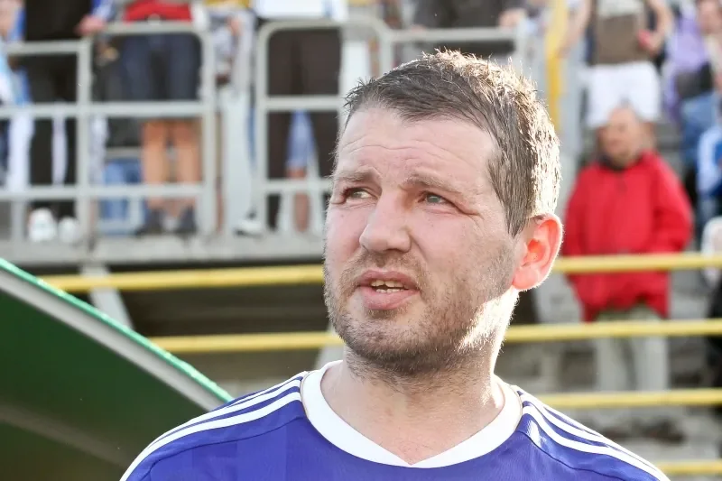
Image source ↗Oleg Salenko
Oleg Salenko was born in Leningrad and entered senior football with Zenit. He developed as a striker before spells with Dynamo Kyiv and clubs in Spain and Scotland.
Read full profileShow less
He played close to the last defender, looking for space to finish quickly. His club career took him to Valencia and Rangers, but his most enduring moment came with Russia at the World Cup.
Salenko scored five goals against Cameroon in Russia's final group match at the 1994 World Cup, a single-match scoring record. He had already scored against Sweden, giving him six goals in the tournament. Russia did not advance, but Salenko shared the top-scorer honour with Hristo Stoichkov.
Romário
Romário was born in Rio de Janeiro and grew up in Brazilian football before joining Vasco da Gama. His goals there helped turn a local prospect into an international striker.
Read full profileShow less
He became a prolific scorer at PSV Eindhoven and Barcelona after emerging at Vasco da Gama. He excelled in crowded penalty areas, making short, sudden movements before finishing with minimal backlift. His confidence and close control made him hard to mark even when Brazil played cautiously.
Romário was the attacking centre of Brazil's 1994 World Cup title team. His goals and partnership with Bebeto gave a defensively organised side enough creativity and finishing to reach the final. Brazil drew 0–0 with Italy before winning on penalties, and Romário's contribution across the tournament earned him the best player award.
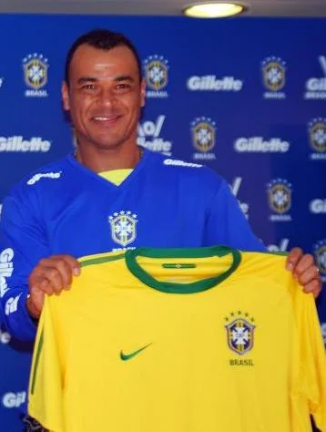
Image source ↗Cafu
Cafu was born in Itaquaquecetuba, near São Paulo, and worked his way into senior football with São Paulo FC. He developed into an attacking right-back whose stamina let him cover the full length of the pitch.
Read full profileShow less
After winning major titles with São Paulo, he played for Roma and AC Milan. His overlapping runs gave teammates an outlet on the right, while his recovery speed helped him defend after joining attacks. He became a steady presence for Brazil across four World Cups.
Cafu appeared in the 1994, 1998 and 2002 World Cup finals, the only player to feature in three. He came on during Brazil's 1994 win over Italy, finished runner-up to France in 1998 and captained the 2002 team to victory over Germany. Lifting the trophy in Yokohama capped a tournament in which Brazil won all seven matches.
Roberto Baggio
Roberto Baggio was born in Caldogno, near Vicenza, Italy. He entered professional football with Vicenza, where his skill drew attention well beyond the lower divisions.
Read full profileShow less
He emerged at Vicenza and became a star at Fiorentina and Juventus before spells with AC Milan, Bologna, Inter Milan and Brescia. A creative forward, he used delicate close control, sudden turns and curled finishes to unlock crowded defences. His passing made him a playmaker as well as a scorer.
Baggio carried much of Italy's attack in the 1994 World Cup knockout rounds. He scored twice to rescue the team against Nigeria, found the late winner against Spain and struck twice more against Bulgaria to reach the final. Brazil held Italy to a scoreless draw and won the shootout, but Baggio's five knockout goals had brought his team within one match of the title.

Salvatore Schillaci
Salvatore Schillaci was born in Palermo and began his senior career with Messina. His progress through Italian football was steady before a sudden rise to international fame.
Read full profileShow less
He climbed from Messina to Juventus and Inter Milan before finishing his career in Japan. A restless penalty-area forward, he chased loose balls, timed runs across defenders and reacted quickly to rebounds. Those instincts made him a sudden star on the international stage.
Schillaci scored six goals as host Italy reached third place at the 1990 World Cup. His goals sustained the team through a tight tournament, including key knockout matches, and he finished both top scorer and best player. Italy lost its semi-final to Argentina on penalties but won the third-place match, with Schillaci's finishing at the centre of the run.
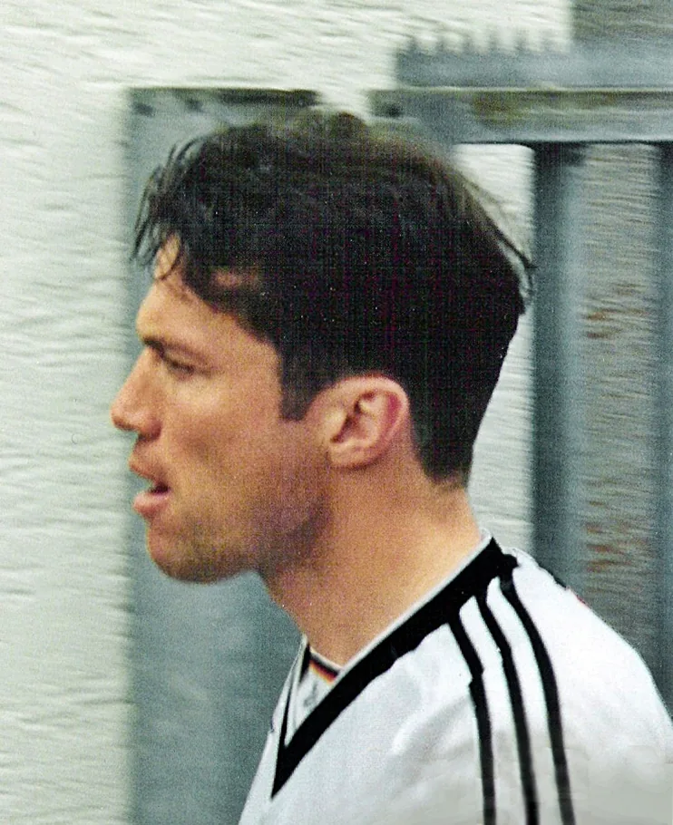
Image source ↗Lothar Matthäus
Lothar Matthäus was born in Erlangen and began his senior career at Borussia Mönchengladbach. He grew into a midfielder who could cover ground, win the ball and drive play forward.
Read full profileShow less
He later played for Bayern Munich and Inter Milan, combining defensive work with long passing and powerful runs from midfield. He could set the tempo of a match and take responsibility when his side needed to push forward. Later in his career, he also played in defence.
Matthäus represented West Germany and Germany at five World Cups from 1982 to 1998. He captained West Germany in 1990, when it beat Argentina 1–0 in the final, and appeared in 25 World Cup matches across his career. His leadership and range in midfield made him central to the 1990 title run.

Andreas Brehme
Andreas Brehme was born in Hamburg and played youth football under the guidance of his father, Bernd. He entered senior football away from Germany’s biggest clubs before moving to Kaiserslautern.
Read full profileShow less
He played for Kaiserslautern, Bayern Munich and Inter Milan during a career built on versatility. Comfortable with either foot, he could defend at full-back, deliver accurate crosses and step forward to take important set pieces. That range made him valuable in both open play and tense finishes.
Brehme gave West Germany the decisive goal in the 1990 World Cup final, converting a late penalty against Argentina in a 1–0 win. He had already helped the team progress through a demanding knockout draw with his work on the left side. The final kick brought West Germany its third title and completed a campaign in which his reliability matched the side's collective discipline.
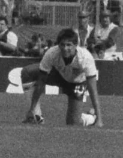
Image source ↗Gary Lineker
Gary Lineker was born in Leicester and joined his hometown club as a young player. His path to England’s national team began in domestic football rather than at a major overseas side.
Read full profileShow less
He scored heavily for Leicester City, Everton, Barcelona and Tottenham Hotspur. He rarely needed elaborate dribbling: he read the next pass early, moved across a defender and finished from close range. His efficient penalty-area play made him England's main scorer for years.
Lineker scored six goals at the 1986 World Cup, more than anyone else in the tournament. His hat-trick against Poland helped rescue England's group campaign, and he kept scoring as the team reached the quarter-finals. England lost to Argentina, but Lineker's finishing gave the side a path through the competition and won him the top-scorer honour.
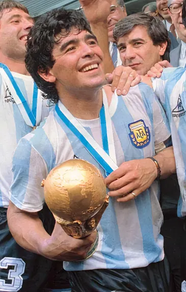
Image source ↗Diego Maradona
Diego Maradona was born near Buenos Aires and grew up in Villa Fiorito. His extraordinary ball control drew attention early, bringing him into Argentinos Juniors’ youth system.
Read full profileShow less
He emerged at Argentinos Juniors, played for Boca Juniors and Barcelona, and became an icon at Napoli. His low centre of gravity, close dribbling and imagination let him create chances from positions where others saw no pass. He could carry a team through pressure as well as change a match with one moment.
Maradona was the defining player of Argentina's 1986 World Cup victory. He scored twice against England in a quarter-final remembered for two very different goals, then scored twice more against Belgium in the semi-final. In the final, his pass released Jorge Burruchaga for the winner against West Germany. Argentina's title depended on both his individual brilliance and his ability to involve teammates.
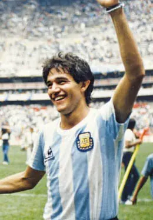
Image source ↗Jorge Burruchaga
Jorge Burruchaga was born in Gualeguay, Argentina, and played in the youth ranks of River Plate before reaching senior football at Arsenal de Sarandí. He later made his name at Independiente.
Read full profileShow less
He won major club honours with Independiente and later played in France for Nantes. An energetic attacking midfielder, he timed runs beyond a centre-forward and worked back to help his own midfield. His movement gave Argentina another route to goal beside Diego Maradona's dribbling.
Burruchaga supplied the winning finish in the 1986 World Cup final. West Germany had recovered from 2–0 down, but he ran onto Maradona's pass and scored to make it 3–2 for Argentina. That goal completed a campaign in which his off-ball work and willingness to attack open space helped balance a team built around its captain.
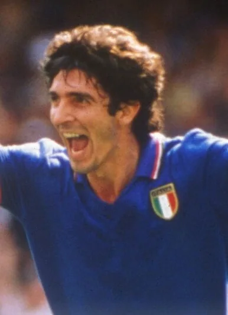
Image source ↗Paolo Rossi
Paolo Rossi was born in Prato, Italy, and developed as a young player at Juventus. His breakthrough came while playing elsewhere in Italian football.
Read full profileShow less
He emerged at Vicenza, played for Perugia and became a star at Juventus. He was a poacher with unusually sharp anticipation, moving into scoring positions just before defenders recognised the danger. His quiet efficiency made him especially effective in crowded penalty areas.
Rossi transformed Italy's 1982 World Cup campaign. After a slow start, he scored three times against Brazil, twice against Poland in the semi-final and once more in the final victory over West Germany. His six goals made him the tournament's top scorer, while his decisive strikes turned Italy's difficult path into a third world title and earned him the best player award.
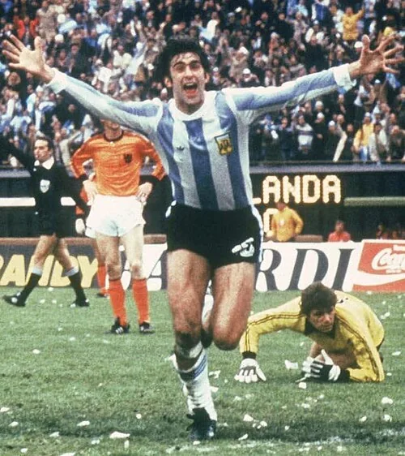
Image source ↗Mario Kempes
Mario Kempes was born in Córdoba Province, Argentina, and began his senior career with Instituto. He developed into a prolific forward before moving to clubs farther from home.
Read full profileShow less
He played for Rosario Central, Valencia and River Plate during a prolific career. He was a powerful runner who could carry the ball through a defence and finish from the edge of the area or inside it. With Argentina, his directness gave the team a forceful attacking identity.
Kempes became the central figure of Argentina's first World Cup title in 1978. He scored six goals and was named both top scorer and best player, then struck twice in the final against the Netherlands. His runs repeatedly broke through a stubborn defence, and Argentina's 3–1 extra-time win made his tournament inseparable from the country's triumph.
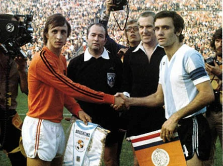
Image source ↗Johan Cruyff
Johan Cruyff was born in Amsterdam and grew up close to Ajax. He joined the club’s youth system, where his technical ability and understanding of space developed together.
Read full profileShow less
He led Ajax's rise and then brought his vision to Barcelona, where he later became an influential coach. As a player, he moved between positions, demanded the ball and used quick turns and passes to rearrange an opponent's defence. His reading of space made him the central figure in Total Football.
Cruyff captained the Netherlands to the 1974 World Cup final, creating chances and scoring three goals along the way. In the opening minute of the final, his surge into the West German penalty area won the spot kick that put the Dutch ahead before an opponent had touched the ball. West Germany recovered to win 2–1, but Cruyff's play shaped the tournament's most memorable team.
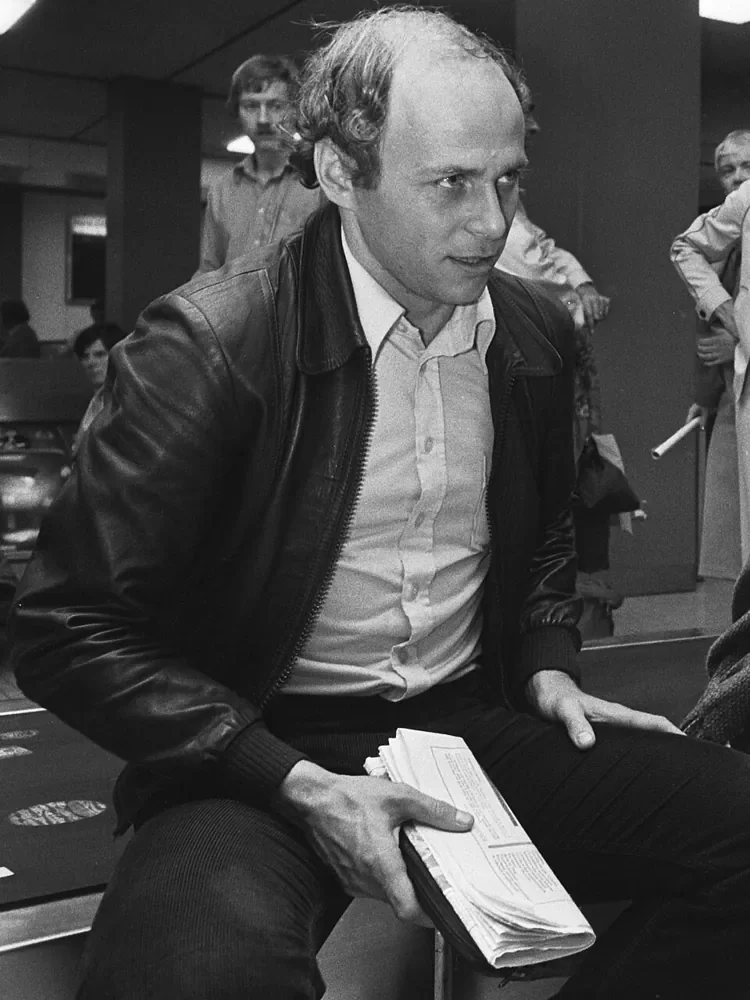
Image source ↗Grzegorz Lato
Grzegorz Lato was born in Malbork, Poland, and made his name at Stal Mielec. He became a quick right winger who could turn a loose ball or a long pass into a scoring chance.
Read full profileShow less
Most of his club career was spent with Stal Mielec, where his pace and direct running helped the side win domestic titles. For Poland, he provided width while still arriving in the penalty area to finish moves.
Lato scored seven goals at the 1974 World Cup, more than any other player. He scored twice against Argentina and struck the winner against Brazil in the third-place match. Poland finished third, and his goals made him one of the tournament's defining players.
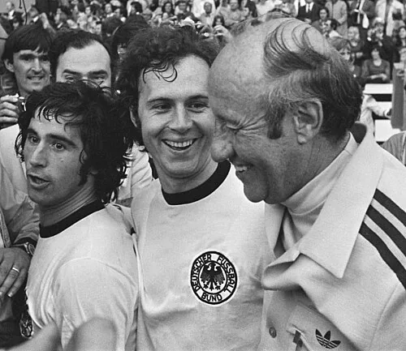
Image source ↗Gerd Müller
Gerd Müller was born in Nördlingen, Bavaria, and played for his hometown side before joining Bayern Munich. His rise came through goalscoring rather than a reputation for speed or flair.
Read full profileShow less
He scored relentlessly for Bayern Munich, becoming famous for quick turns and finishes from seemingly impossible angles. He needed little space or time to get a shot away, and his positioning was more important than his speed. That made him a dependable scorer for West Germany in very different matches.
Müller scored ten times at the 1970 World Cup as West Germany finished third, establishing himself as the team's most reliable finisher. Four years later, with the tournament at home, he scored the winning goal against the Netherlands in the final. His 1974 strike completed a 2–1 comeback and delivered West Germany its second title.
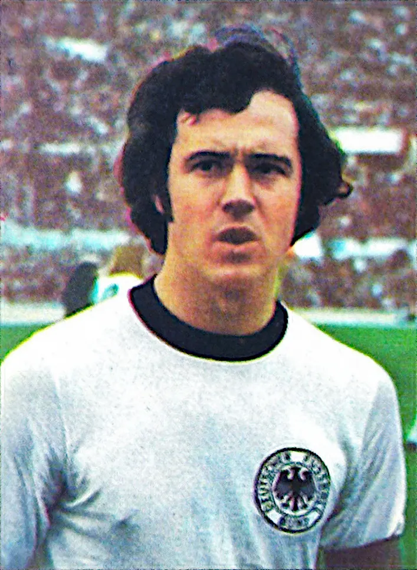
Image source ↗Franz Beckenbauer
Franz Beckenbauer was born in Munich and grew up in the city’s football culture. He entered Bayern Munich’s youth ranks before establishing himself as a senior defender.
Read full profileShow less
He became the organiser of Bayern Munich's defence and later played for the New York Cosmos. As a libero, he stepped out of the back line with the ball, turning a defensive position into the start of an attack. He later coached West Germany, showing the same interest in structure and control from the touchline.
Beckenbauer first reached a World Cup final with West Germany in 1966 and was later recognised as that tournament's best young player. He helped the side finish third in 1970, then captained it to the 1974 title on home soil. His composure at the back and ability to move the ball into midfield gave West Germany a way to respond to the Netherlands' early lead in the final.
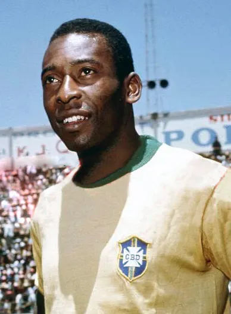
Image source ↗Pelé
Pelé was born Edson Arantes do Nascimento in Três Corações, Brazil, and grew up in Bauru. He learned the game while still a boy and joined Santos as a teenager.
Read full profileShow less
He spent almost all of his club career at Santos before joining the New York Cosmos. He paired explosive movement and close control with a rare range of finishing, heading and passing. More than a scorer, he could draw defenders toward him and then release teammates into the space they left.
Pelé announced himself at the 1958 World Cup as a teenager, scoring six goals and twice in the final as Brazil won its first title. Injury limited his part in the 1962 victory, but he returned as the creative centre of the 1970 champions. His opening header against Italy in that final helped set Brazil on the way to a 4–1 win and a third World Cup.
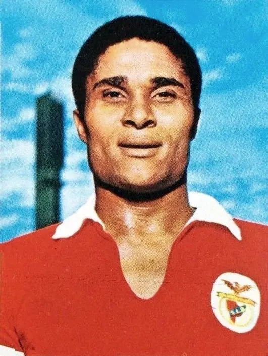
Image source ↗Eusébio
Eusébio was born in Lourenço Marques, now Maputo, in Mozambique when it was under Portuguese rule. He learned the game locally before moving to Lisbon as a young forward.
Read full profileShow less
He became Benfica's leading star, winning domestic and European honours with his speed and fierce shooting. He could burst past a defender or score from distance, and his direct style made him Portugal's most feared forward. His long Benfica career gave him a place among the game's great finishers.
Eusébio drove Portugal to third place at the 1966 World Cup, its best finish. He scored nine goals to lead the tournament, including four as Portugal came back from three goals down against North Korea in the quarter-finals. His finishing gave a talented side the belief and attacking force to reach the semi-finals before England ended its title hopes.
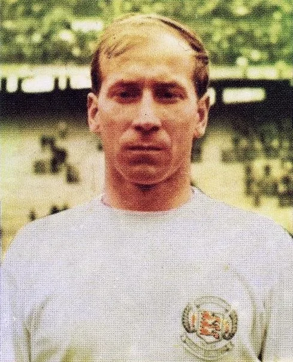
Image source ↗Bobby Charlton
Bobby Charlton was born in Ashington, England, into a family with strong football ties. He joined Manchester United as a teenager and survived the 1958 Munich air disaster.
Read full profileShow less
He spent the defining years of his career at Manchester United, becoming a leader after the Munich air disaster and helping the club win major honours. He could play in midfield or attack, carrying the ball into space and striking powerfully from distance. His passing and calm judgement gave England a creative centre.
Charlton was crucial to England's 1966 World Cup victory. He scored against Mexico in the group stage, then struck both goals in the 2–1 semi-final win over Portugal to take England to Wembley. Geoff Hurst scored the final's hat-trick against West Germany, but Charlton's goals and midfield influence had helped make that title match possible.

Geoff Hurst
Geoff Hurst was born in Ashton-under-Lyne, England, and grew up in a sporting family. He entered West Ham United’s youth setup before becoming a senior forward.
Read full profileShow less
He became a leading forward at West Ham United and later played for Stoke City. He combined strength in the air with intelligent movement and a willingness to work for teammates. His finishing made him a useful focal point for England's disciplined 1960s side.
Hurst's three goals in the 1966 World Cup final made him the decisive figure in England's first title. He equalised against West Germany, then scored twice more in extra time as England won 4–2. The second goal remained controversial, but his ability to keep attacking a tired defence helped turn a tense Wembley final into a home triumph.
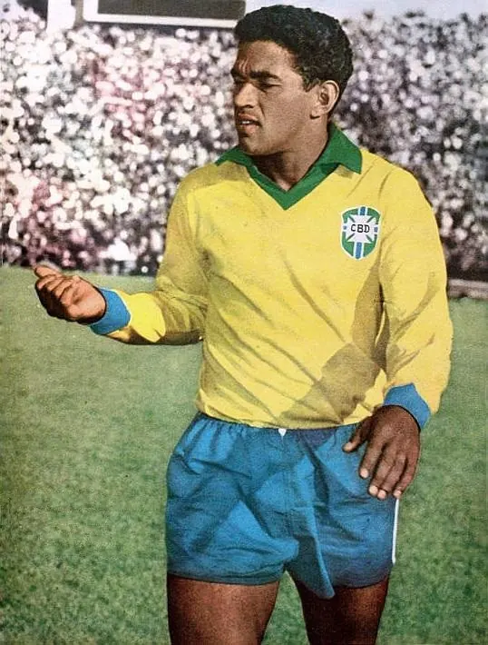
Image source ↗Garrincha
Garrincha was born in Pau Grande, Brazil, and grew up far from the country’s major football centres. His unusual running style and balance became part of the identity he brought to the professional game.
Read full profileShow less
He became a Botafogo icon through his remarkable dribbling from the right wing. He would invite a defender close, change direction and accelerate away even when the opponent knew what was coming. His play was joyful but also practical: it created space and chances for Brazil's forwards.
Garrincha was part of Brazil's first World Cup title in 1958, then became the attack's main spark after Pelé was injured in 1962. His goals and dribbling carried Brazil through difficult knockout matches, and he shared the tournament scoring lead with four goals. Brazil won the final against Czechoslovakia to claim a second straight title, with Garrincha central to the run that got it there.
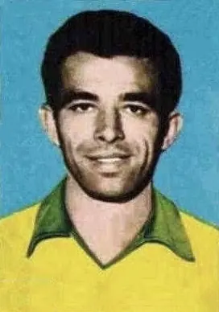
Image source ↗Vavá
Vavá was born in Recife, Brazil, and began playing football in the country’s northeast. He made the move to Vasco da Gama while still a young forward.
Read full profileShow less
He played for Vasco da Gama, Atlético Madrid and Palmeiras, bringing force and determination to the centre-forward role. He attacked crosses, reacted quickly to loose balls and worked through physical defenders. Brazil's more creative players could rely on him to turn their moves into goals.
Vavá delivered in consecutive World Cup finals for Brazil. He scored twice against Sweden in the 1958 final as Brazil won its first title, then added another final goal against Czechoslovakia in 1962. His penalty-area presence gave both champion teams a reliable finisher alongside their more celebrated dribblers and playmakers.
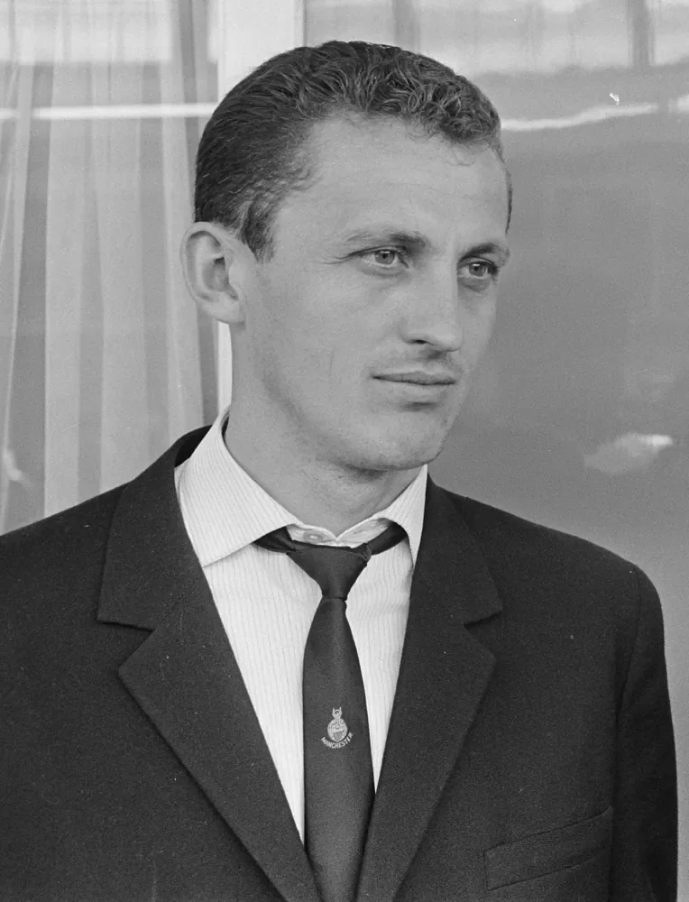
Image source ↗Flórián Albert
Flórián Albert was born in Hercegszántó, Hungary, and developed at Ferencváros. He became a forward with the touch and awareness to create chances as well as score them.
Read full profileShow less
He spent his senior club career with Ferencváros, often dropping away from the centre-forward position to connect with midfielders. His control and passing helped Hungary move the ball through crowded areas.
At the 1962 World Cup, Albert scored four goals as Hungary reached the quarter-finals. He shared the tournament's top-scoring mark with five other players and was later recognised in retrospective selections as its best young player.
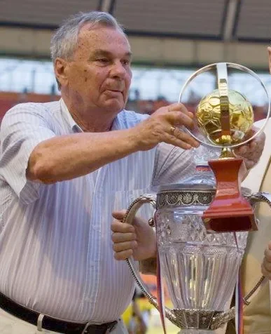
Image source ↗Valentin Ivanov
Valentin Ivanov was born in Moscow and rose through the ranks at Torpedo Moscow. He played as an attacking midfielder and forward, combining close control with an eye for goal.
Read full profileShow less
Ivanov spent his club career at Torpedo, where he helped direct attacks from central areas. He also became an important part of the Soviet national team in the years around its first European title.
He scored four goals for the Soviet Union at the 1962 World Cup, sharing the tournament's top-scoring total. His goals helped the side advance from its group before it lost to host Chile in the quarter-finals.
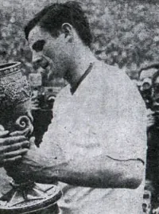
Image source ↗Dražan Jerković
Dražan Jerković was born in Šibenik and developed into a forward at Dinamo Zagreb. His movement and finishing made him a regular scorer for club and country.
Read full profileShow less
At Dinamo, he could lead the line or move into spaces left by defenders. He also represented Yugoslavia during a period when its attack mixed technical passing with quick runs behind the defence.
Jerković scored four goals at the 1962 World Cup, sharing the tournament's top-scoring mark. Yugoslavia reached the semi-finals in Chile and finished fourth, its run built in part on his finishing in the earlier rounds.
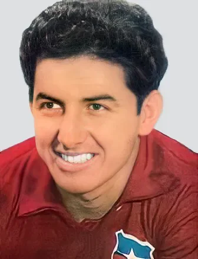
Image source ↗Leonel Sánchez
Leonel Sánchez was born in Santiago and came through Universidad de Chile. A left-sided attacker, he was known for his powerful left foot and direct runs.
Read full profileShow less
He spent most of his club career with Universidad de Chile, becoming a central figure in its successful side of the 1960s. He could deliver a cross, take a free kick or cut inside to shoot.
Sánchez scored four goals for host Chile at the 1962 World Cup, sharing the tournament's top-scoring total. His free-kick goal against the Soviet Union helped Chile reach the semi-finals, and the team went on to finish third.
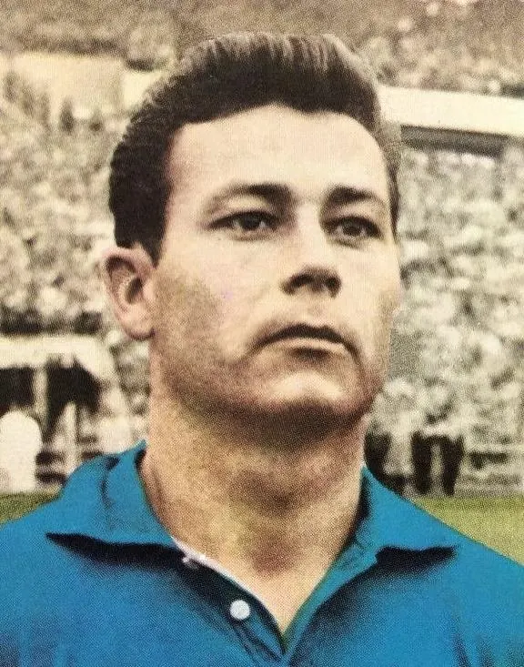
Image source ↗Just Fontaine
Just Fontaine was born in Marrakech and raised in Casablanca, then part of French Morocco. He moved to France as a young adult to continue his football career.
Read full profileShow less
He scored prolifically for Nice and Stade de Reims before injury ended his playing career early. He was a quick-thinking centre-forward who found space near goal and struck with little hesitation. His scoring at club level prepared him for one of the most remarkable individual tournaments in World Cup history.
Fontaine scored 13 goals in six matches at the 1958 World Cup, a single-tournament record. His goals took France to the semi-finals, and after defeat to Brazil he scored four more against West Germany in the third-place match. France finished third, with Fontaine's relentless finishing turning the team into one of the tournament's strongest attacks.
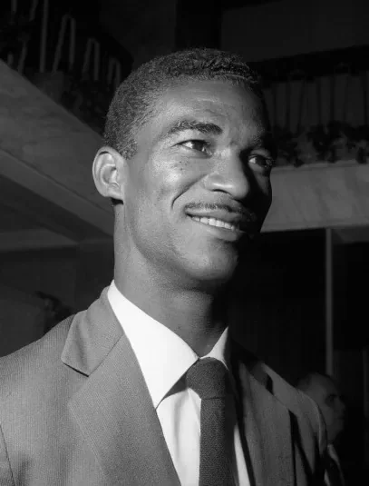
Image source ↗Didi
Didi was born Waldyr Pereira in Campos dos Goytacazes, Brazil. He developed as a midfielder whose passing could change the direction and pace of a match.
Read full profileShow less
He played for Fluminense and Botafogo, and later spent a short period at Real Madrid. From midfield he could hold the ball under pressure, find runners with long passes and take dangerous free kicks.
Didi guided Brazil's attack during its first World Cup victory in 1958 and was later recognised as the tournament's best player. He remained an important figure when Brazil retained the title in 1962, giving its forwards the service and control they needed.
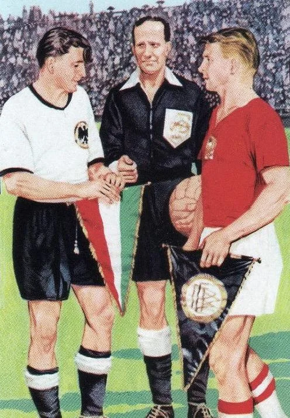
Image source ↗Ferenc Puskás
Ferenc Puskás was born in Budapest and grew up in a football family. His father coached at Kispest, the club where he began the playing career that made him a Hungarian national figure.
Read full profileShow less
He led Honvéd's celebrated Hungarian side before becoming a star at Real Madrid. His left foot could deliver a precise pass or a powerful finish with little preparation. He often dropped into space to direct the attack, making him both its organiser and its scorer.
Puskás captained Hungary's brilliant 1954 World Cup team, which reached the final after overwhelming opponents with fluid attacking play. He scored early against West Germany to put Hungary ahead, but the Germans recovered to win 3–2. The loss denied the Mighty Magyars a world title, though Puskás had helped establish the team as one of the era's most influential.
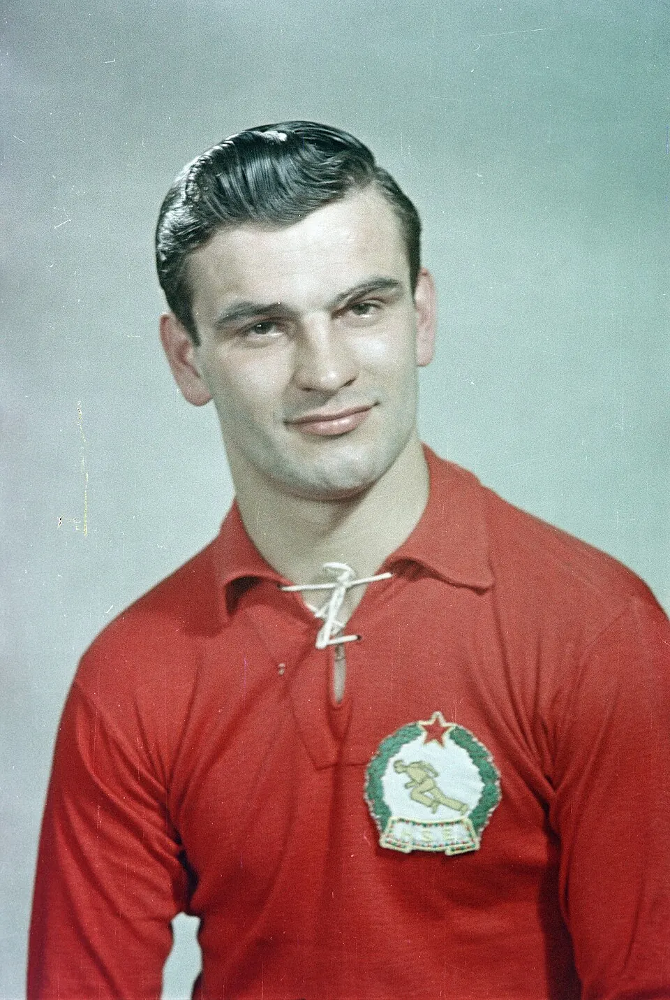
Image source ↗Sándor Kocsis
Sándor Kocsis was born in Budapest and developed in Hungarian football during the 1940s. His rise at Ferencváros preceded his place in the celebrated Honvéd and national-team attacks.
Read full profileShow less
He was a prolific forward for Honvéd before moving to Barcelona. His timing in the air made him a particular threat from crosses, but he also finished sharply on the ground. He formed part of Hungary's flexible attack alongside Ferenc Puskás and other technically gifted forwards.
Kocsis scored 11 goals at the 1954 World Cup, helping Hungary reach the final unbeaten. His goals included decisive contributions in difficult knockout matches, and he finished as the tournament's leading scorer. He did not score in the final defeat to West Germany, but his tournament-long finishing was one of the main reasons Hungary had reached that stage.
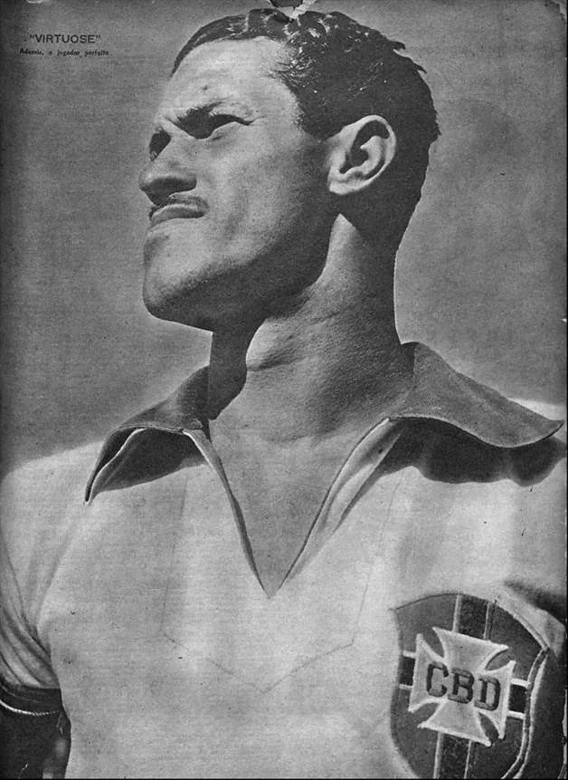
Image source ↗Ademir de Menezes
Ademir de Menezes was born in Recife, Brazil, and began his career at Sport Recife. He moved from the northeast to Rio de Janeiro’s club scene as his reputation grew.
Read full profileShow less
He began at Sport Recife and became a major scorer for Vasco da Gama, with a spell at Fluminense. He combined speed with clever movement through the centre of attack. His ability to finish early made him a focal point for club and country.
Ademir scored nine goals at the 1950 World Cup as Brazil moved through the group stage and the final round-robin pool. His goals helped make the hosts overwhelming favourites before the decisive match with Uruguay. Brazil lost that match 2–1 and finished second, but Ademir's finishing had driven the campaign that put the team one game from the title.
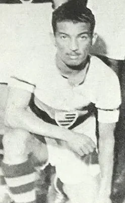
Image source ↗Zizinho
Zizinho was born Thomaz Soares da Silva in São Gonçalo, Brazil. He came through Flamengo and became one of the country's leading attacking midfielders before the World Cup arrived in Brazil.
Read full profileShow less
He played for Flamengo, Bangu and São Paulo, using quick feet and precise passes to open space for teammates. He could move between midfield and attack and was admired for the range of his game.
At the 1950 World Cup, Zizinho led much of Brazil's attacking play as the hosts reached the final round. Uruguay's win in the deciding match denied Brazil the title, but Zizinho's performances earned him retrospective recognition as the tournament's best player.
Alcides Ghiggia
Alcides Ghiggia was born in Montevideo, Uruguay. He entered senior football with Sud América before establishing himself at Peñarol.
Read full profileShow less
He made his name as a quick right winger at Peñarol before moving to Italy to play for Roma and AC Milan. He stretched defences with direct runs and could finish when he cut in toward goal. Later, he also represented Italy internationally.
Ghiggia scored in each of Uruguay's four matches at the 1950 World Cup. His most important goal came in the 79th minute of the decisive final-pool match against host Brazil, turning a 1–1 draw into a 2–1 Uruguay victory. That finish secured the title and made him a central figure in the upset remembered as the Maracanazo.
Leônidas
Leônidas da Silva was born in Rio de Janeiro and entered the city’s club football scene as a young forward. He developed into one of Brazil’s first nationally celebrated players.
Read full profileShow less
He played for several Brazilian clubs, most notably Flamengo and São Paulo. A nimble and inventive forward, he was associated with acrobatic finishing and the confidence to attempt difficult shots. His flair made him one of Brazil's first widely known football stars.
Leônidas led Brazil's attack at the 1938 World Cup with seven goals, the most in the tournament. He scored in the dramatic 6–5 win over Poland and continued to threaten as Brazil advanced through the knockout rounds. Brazil lost to eventual champion Italy in the semi-finals but won the third-place match, giving the country its best World Cup finish to that point.
Oldřich Nejedlý
Oldřich Nejedlý was born in Žebrák, in what is now the Czech Republic, and began playing for his hometown side. His path through local clubs eventually took him to Sparta Prague.
Read full profileShow less
He became a star at Sparta Prague, winning league titles and the Mitropa Cup. He was an intelligent inside-forward who could create space for others and strike accurately himself. His movement and composure made him one of Czechoslovakia's leading prewar attackers.
Nejedlý scored five goals at the 1934 World Cup, more than any other player. His hat-trick against Germany in the semi-final sent Czechoslovakia into the final against Italy. The team lost 2–1 after extra time, but his scoring had been the main force behind its run to second place.
Giuseppe Meazza
Giuseppe Meazza was born in Milan and developed into a prolific forward at Inter. His skill and goals made him one of Italy's best-known players before the first World Cup held in Europe.
Read full profileShow less
He could score from tight angles and create chances for other forwards. Most of his club success came with Inter, though he also played for AC Milan later in his career.
Meazza helped Italy win the 1934 World Cup at home and was later recognised in retrospective selections as its best player. He captained Italy when it retained the title in 1938, scoring a penalty against Brazil in the semi-final before the team beat Hungary in the final.
Guillermo Stábile
Guillermo Stábile was born in Buenos Aires and began playing at Deportivo Metán before joining Huracán. His early goalscoring brought him to national attention.
Read full profileShow less
He starred for Huracán before playing in Italy and France, and he later coached Argentina for many years. A centre-forward with a quick eye for a scoring chance, he moved well across defenders and finished efficiently. His reputation grew rapidly during the first World Cup.
Stábile scored eight goals in four matches at the 1930 World Cup, becoming the competition's first leading scorer. His goals helped Argentina reach the final against host Uruguay, where he scored again to give his side a half-time lead. Uruguay recovered to win 4–2, but Stábile's finishing had powered Argentina's run to the inaugural final.
José Nasazzi
José Nasazzi was born in Montevideo and became a defender in Uruguay's domestic game. He played for Bella Vista and later Nacional, earning a reputation for firm tackling and leadership.
Read full profileShow less
From the back, Nasazzi organised teammates and gave Uruguay a steady presence under pressure. He had already captained the national side through major international success before the first World Cup.
Nasazzi captained Uruguay at the inaugural World Cup in 1930. The hosts won all four matches and beat Argentina 4–2 in the final at the Estadio Centenario. His leadership of that champion side brought him retrospective recognition as the tournament's best player.
Photo credits
Select a name for its image source and usage details. Local images were converted to WebP for this page; some match photographs are served by their publishers.
- Kylian MbappéBryan Berlin · CC BY-SA 4.0
- RodriBryan Berlin · CC BY-SA 4.0
- Ferran TorresBryan Berlin · CC BY-SA 4.0
- Lionel MessiBryan Berlin · CC BY-SA 4.0
- Enzo FernándezBryan Berlin · CC BY-SA 4.0
- Harry KaneBryan Berlin · CC BY-SA 4.0
- Luka ModrićBryan Berlin · CC BY-SA 4.0
- Paul PogbaАнтон Зайцев · CC BY-SA 3.0
- Thibaut CourtoisBryan Berlin · CC BY-SA 4.0
- James Rodríguezjmmuguerza · CC BY-SA 3.0
- Thomas MüllerMichael Kranewitter · CC BY 3.0 at
- Manuel NeuerBryan Berlin · CC BY-SA 4.0
- David VillaTânia Rêgo/ABr · CC BY 3.0 br
- Andrés IniestaClément Bucco-Lechat · CC BY-SA 3.0
- Wesley SneijderDmitriy Neymyrok · CC BY-SA 3.0
- Diego ForlánЕлена Рыбакова changed work Amarhgil · CC BY-SA 3.0
- Miroslav KloseMichael Kranewitter · CC BY-SA 3.0
- Fabio CannavaroDavid Ruddell Cropped and retouched by Princhex2012 · CC BY 2.0
- Gianluigi BuffonOriginal: David Ruddell / Derivative work: Danyele · CC BY 2.0
- RonaldoMilly barzellai · CC BY-SA 4.0
- RonaldinhoReto Stauffer, www.hopp-schwiiz.ch · CC BY-SA 2.0 de
- Oliver KahnGoal.com · Editorial image; see source
- Zinédine ZidaneDavid Ruddell modified by SuperManu · CC BY 2.0
- Davor ŠukerCroatia.eu · Editorial image; see source
- Fabien BarthezFox Deportes · Editorial image; see source
- Hristo StoichkovRick Stewart / Allsport via FIFA · Editorial image; see source
- Oleg SalenkoOleg Dubyna (doa.in.ua) · CC BY-SA 3.0
- RomárioBeate Mueller / Bongarts / Getty Images via FIFA · Editorial image; see source
- CafuSergio Savarese · CC BY-SA 2.0
- Roberto Baggioimago / WEREK via FIFA · Editorial image; see source
- Salvatore SchillaciAFP / Le Dauphiné · Editorial image; see source
- Lothar MatthäusFlorian K · CC BY-SA 3.0
- Andreas BrehmeVKZ · Editorial image; see source
- Gary LinekerRob Bogaerts for Anefo · CC0
- Diego MaradonaUnknown authorUnknown author · Public domain
- Jorge BurruchagaUnknown authorUnknown author · Public domain
- Paolo RossiUnknown authorUnknown author · Public domain
- Mario KempesEl Gráfico · Public domain
- Johan CruyffUnknown authorUnknown author · Public domain
- Grzegorz LatoRob Bogaerts for Anefo · CC0
- Gerd MüllerBert Verhoeff for Anefo · CC BY-SA 3.0 nl
- Franz BeckenbauerPanini Group · Public domain
- PeléUnknown authorUnknown author · Public domain
- EusébioPanini · Public domain
- Bobby CharltonPanini · Public domain
- Geoff HurstEvening Standard · Editorial image; see source
- GarrinchaEl Gráfico, n° 2233 · Public domain
- VaváPanini · Public domain
- Flórián AlbertNationaal Archief / Anefo · CC BY-SA 3.0 nl
- Valentin IvanovАлександр Мельников · CC BY-SA 3.0
- Dražan JerkovićUnknown author · Public domain
- Leonel SánchezRevista Argentina "Mundo Deportivo" · Public domain
- Just FontainePanini · Public domain
- DidiEmilio Ronchini / Mondadori · Public domain
- Ferenc PuskásLiebig Milano - serie n°289 LEMCO · Public domain
- Sándor KocsisFortepan/Faragó György · CC BY-SA 3.0
- Ademir de MenezesUnknown / O Cruzeiro · Public domain
- ZizinhoC.R. Flamengo poster, cropped by Praxides · Public domain
- Alcides GhiggiaUnknown authorUnknown author · Public domain
- LeônidasUnknown authorUnknown author · Public domain
- Oldřich NejedlýEl Gráfico · Public domain
- Giuseppe MeazzaUnknown author · Public domain
- Guillermo StábileUnknown authorUnknown author · Public domain
- José NasazziUnknown author · Public domain